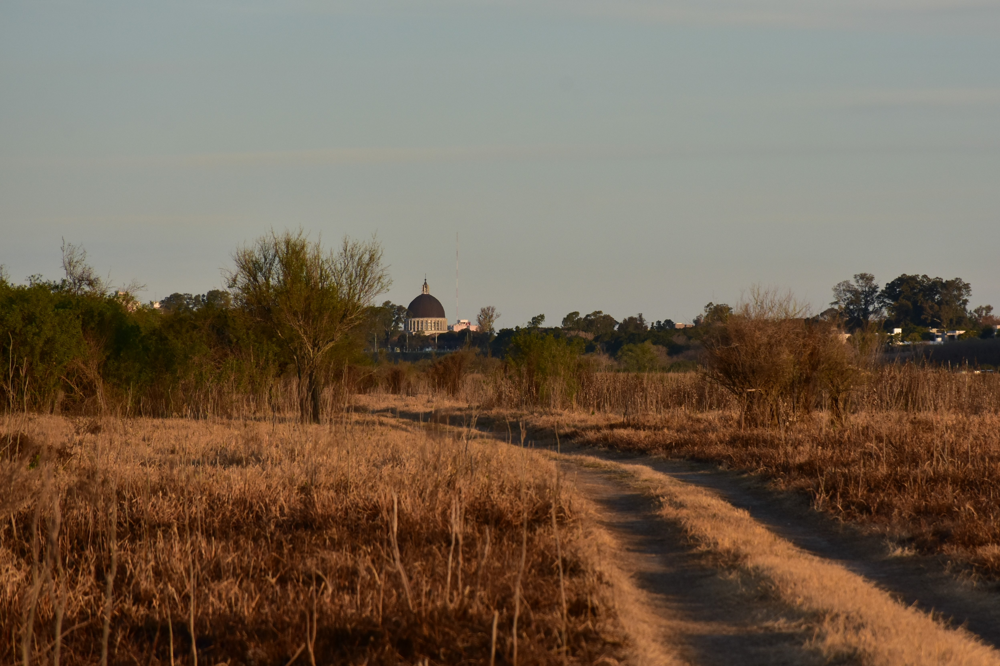
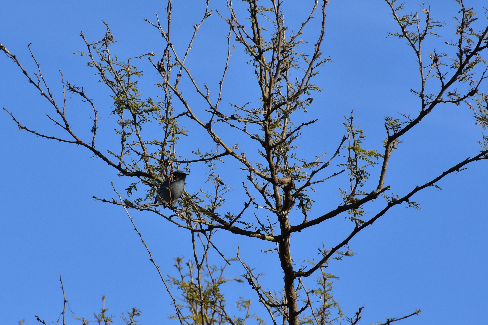
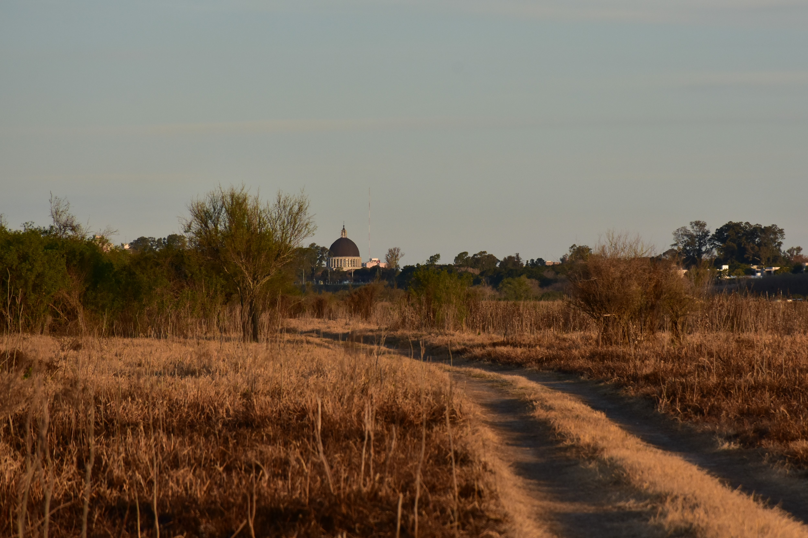
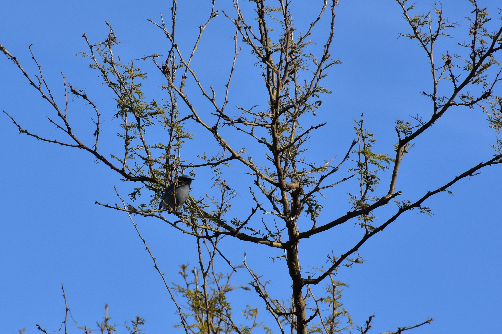
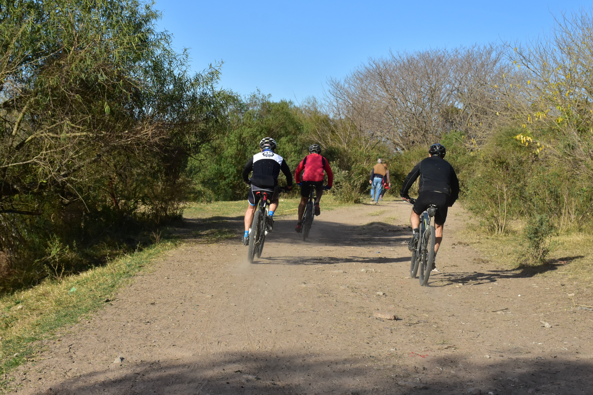
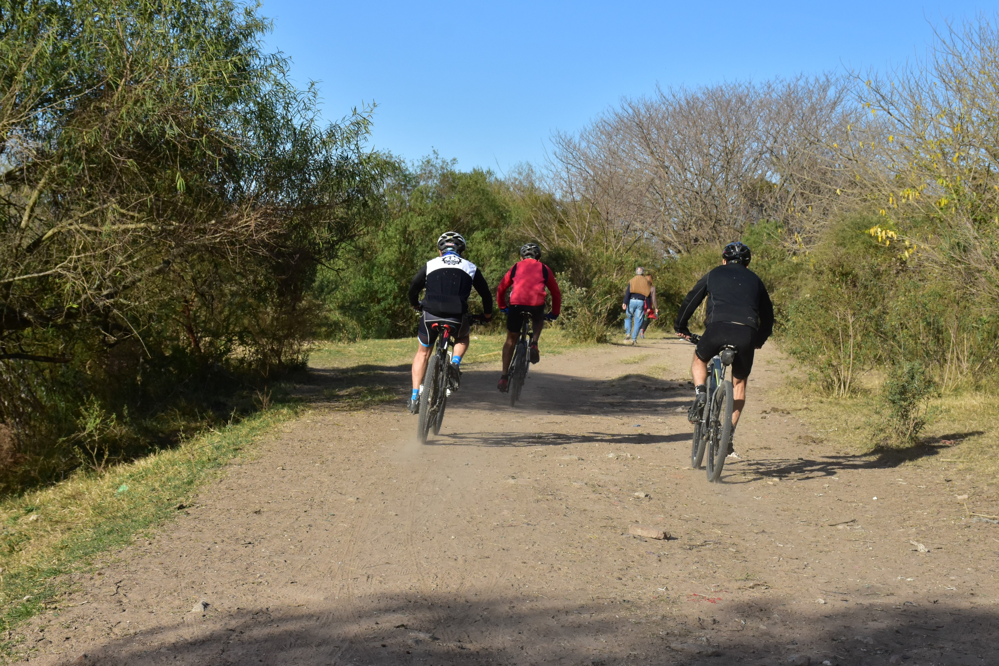

Reserva Natural Parque Rafael de Aguiar
El área natural protegida municipal Parque Rafael de Aguiar (antes denominada parque regional forestal y botánico Rafael de Aguiar), creada en 1959, es un área protegida del partido de San Nicolás, en el extremo norte de la provincia de Buenos Aires, centro-este de la Argentina, a unos 230 km al noroeste de la ciudad de Buenos Aires. Comprende una superficie de 1500 hectáreas. El área natural protege ambientes característicos del delta medio y el borde continental bonaerense lindero a la ciudad de San Nicolás de los Arroyos. En los sectores moldeados por las periódicas crecidas del río, se encuentran bosques ribereños higrófilos, así como pajonales y arbustales inundables. En el talud barrancoso se desarrolla el bosque del talar de barranca, el cual es marginado en la terraza alta por una porción vestigial de vegetación característica de la estepa pampeana. Su rica biodiversidad, ofrece avistamiento de aves regionales y migratorias en su paso.
Su nombre honraba a quien el 14 de abril de 1748 fundó la ciudad de San Nicolás, don Rafael de Aguiar. Aunque en 2021, nuestra Reserva Protegida dejó de serlo y comenzó a ser modificada por la gestión del actual Intendente Manuel Passaglia y pasó a llamarse "Eco Parque", generando controversias con los grupos ambientalistas.
 



 



Molino Santa Clara
Para saber por qué su nombre, tenemos que viajar en el tiempo. Allí funcionaba el Molino harinero del francés León Bossus,ubicado a la vera del arroyo del medio cercano a las vías del ferrocarril, el mismo había sido adquirido a su primitivo dueño el Sr. Abella quien por llevar su esposa el nombre de Clara lo había denominado Santa Clara (Aún hoy, se pueden ver allí escombros pertenecientes a ese Molino). El Molino siguió funcionando después del cierre de las barracas hasta 1926, fecha en la que una violenta inundación inutilizó sus maquinas y dejó de funcionar definitivamente.
.JPG)
.JPG)
.JPG)
La Rycsa
Su nombre se debe a que allí funcionó una de las plantas de fundiciones de la marca RYCSA de la sociedad: "Rosati y Cristófaro Industrias Metalúrgicas S.A.M.I." Su producción incluía la fabricación de puentes grúa, calderas, máquinas herramientas y construcciones metálicas en general. Incluso, la marca llegó a presentar 3 prototipos de autos. La empresa Rycsa entro en crisis en 1977 derivando en el deterioro y abandono de las instalaciones.